Modeling Liquid Sounds
Timothy R. Langlois
Adobe | Graphyz 3
Thanks for having me. Today: bubbles. How a bubble makes sound, why that matters well beyond graphics, and then a walk up a "ladder" of acoustic models — from models that get the statistics right to models good enough to make audio you'd want to listen to.
Theme to keep in mind: those are very different bars.
How does water make sound?Mostly bubbles — and mostly when they are born , not when they pop
Real bubble: slow-motion video, sound at real speed
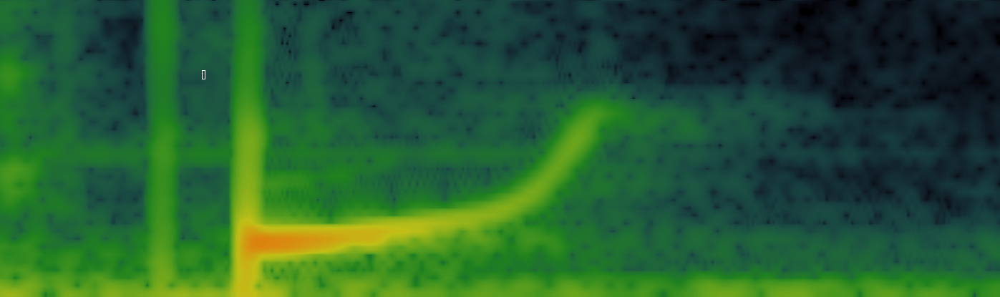
One bubble ≈ one decaying sinusoid with a small upward chirp
Pinch-off forces the bubble into volume oscillation
It rings like a damped oscillator for a few ms
Pitch depends on size, shape, and position
Here's a single real bubble. Video slowed down, audio at real speed. What surprises most people: the sound is made when the bubble forms, not when it pops. Pinch-off kicks the bubble into volume oscillations and it rings like a damped oscillator. In the spectrogram: one main frequency, with a slight rise as it approaches the surface.
Bubbles help the ocean breatheBreaking waves inject gas into the sea and spray into the air
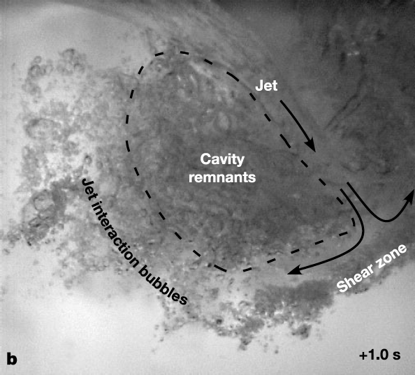
Bubble plume under a breaking wave, 1 s after impact [Deane & Stokes 2002]
Breaking waves drive clouds of bubbles metres below the surface
Hydrostatic pressure + surface tension squeeze the gas into solution
Bubble-mediated transfer: a significant share of air–sea CO₂ flux, growing with wind speed [Reichl & Deike 2020]
Bursting bubbles launch sea-spray aerosol → cloud condensation nuclei
Climate models need how many bubbles, of what size, how deep — statistics
Now zoom out from one bubble to billions: the ocean absorbs roughly a quarter of the CO₂ we emit, and the air–sea interface is where that happens. When waves break they entrain huge plumes of bubbles. The extra pressure at depth plus surface tension pushes gas into solution, so bubbles act like a pump — estimates put bubble-mediated transfer at a large fraction (~40% in Reichl & Deike) of the CO₂ flux, more at high winds.
When they come back up and burst, they throw droplets into the air that become sea-spray aerosol and seed clouds.
Notice what these models need: populations, distributions, averages. Keep that in mind.
Hard to see, easy to hearBubbles as acoustic sensors — and acoustic targets
Passive listening
Each bubble rings at a pitch set by its size.
Sound spectrum → bubble census: breaking waves, surf zones, methane seeps on the seafloor [Deane 1997; Leighton & White 2012].
Rain gauges
Small raindrops trap bubbles that ring near 15 kHz.
Underwater microphones measure rainfall and drop sizes over the open ocean [Medwin et al. 1992; Nystuen 2001].
Active sonar & medicine
A resonant bubble scatters sound far beyond its physical size.
Ship wakes, fish swim bladders, and ultrasound contrast agents (1–10 µm microbubbles, MHz) [Trevorrow et al. 1994; Love 1978; Stride & Saffari 2003].
Almost all of this works by inverting averages : spectra, scattering strength, attenuation.
Bubbles are hard to see — try counting them in that plume — but they're loud. Because a bubble's pitch is set by its size, the spectrum of underwater noise is effectively a census of the bubbles. Oceanographers use this for breaking waves and to quantify gas seeps.
Rain on the ocean has a distinctive peak around 15 kHz from small drops entraining tiny bubbles — that's how you measure rainfall in the middle of the ocean.
Actively: a bubble at resonance is an enormous scatterer, hundreds of times its geometric cross-section. That's why fish swim bladders show up on sonar, and why microbubbles are used as ultrasound contrast agents.
A bubble is a mass on a springMinnaert, “On musical air-bubbles and the sounds of running water” (1933)
The classic model: Minnaert 1933. The gas is the spring, the water around it is the mass. A 1 mm radius bubble rings at about 3.3 kHz; frequency is inversely proportional to radius. [Play a few sizes: 3 mm, 1 mm, 0.3 mm.]
Key fact: at 3 kHz the wavelength in water is ~45 cm, the bubble is 2 mm — so near the bubble the flow is incompressible. That's what makes everything that follows tractable.
What rings the bell?The forcing sets amplitude and attack — and is the hardest part to model
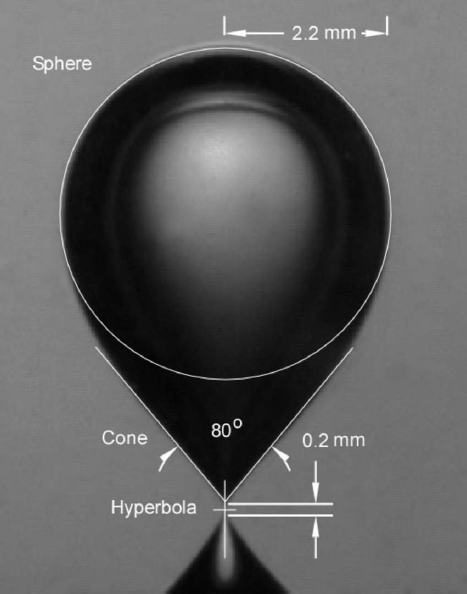
Pinch-off: the collapsing neck jets into the bubble [Deane & Czerski 2008]
Birth, splitting, merging
High curvature at the neck → surface tension drives a rapid volume change → the bubble starts ringing.
Splitting and merging excite both bubbles [Czerski & Deane 2011].
Popping
At the surface the cap film ruptures and the cavity rings as a Helmholtz resonator — quieter, higher-frequency content.
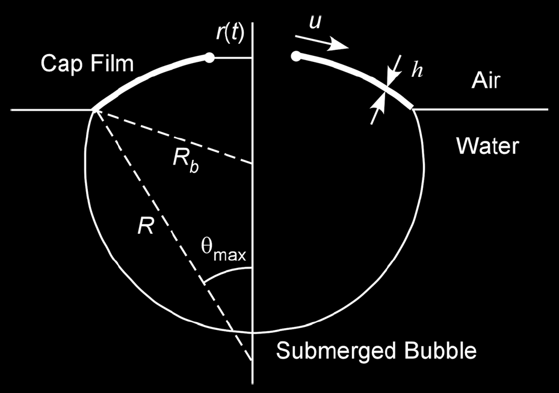
Popping: cap-film rupture
The Minnaert model tells you the pitch, but not how loud or how the bubble is struck. The most widely used entrainment model is neck collapse: the neck at pinch-off has extreme curvature, surface tension fires it into the bubble, and that rapid volume change excites the oscillation. Splitting and merging do similar things. Popping makes a little sound too — the cavity rings like blowing over a bottle.
Pitch depends on surroundingsSame bubble, different place → different note
Drag the bubble (hold to listen).
Near the free surface : less water to push → pitch risesNear rigid walls : more effective mass → pitch dropsShape matters too: an ellipsoid relaxing to a sphere drops ~15% in 13 ms
Method of images (one wall at distance \(d\)):
$$f \approx \frac{f_0}{\sqrt{1 \mp R/2d}}$$
radius
f =
(free space
▶ rise to surface
The environment changes the effective mass. Near the free surface there's less water to push, so pitch rises — that's the classic upward "bloop" chirp. Near a rigid wall it drops. Shape matters too. In real scenes the bubble is never in free space, so if you want a specific splash to sound right, you need to know where each bubble is and what shape it is.
Different Questions
“How many bubbles are there?”
Oceanography, sensing, engineering
Needs averages: spectra, size distributions, sound speed, attenuation
Individual errors average out
Success = the right numbers
“What does this splash sound like?”
Graphics, games, VR, film
Needs a waveform: every onset, pitch glide, amplitude, and the timing between them
Synchronized with what you see
Success = it sounds right to a listener
The ear is unforgiving: it hears clicks, wrong rhythms, missing low end, and anything that “sounds synthetic.”
This is the core tension of the talk. Most of acoustics research on bubbles asks the first question and needs averaged quantities; individual errors wash out. In graphics we're asking the second question: give me a waveform for this particular splash, in sync with the picture. That is a much higher bar — the ear is a ruthless critic.
Getting the statistics rightModels that describe the crowd, not the individual
Bubble size distributions
$$N(R) \propto \begin{cases} R^{-3/2} & R < R_H \\ R^{-10/3} & R > R_H \end{cases}\quad R_H\!\approx\! 1\,\text{mm}$$
Breaking waves [Deane & Stokes 2002]: a sharp change at the Hinze scale.
Ambient-noise spectra
Spectral level ↔ bubbles born per second ↔ wind speed and rain rate.
Effective-medium models
$$\frac{1}{\rho_m c_m^2} = \frac{\beta}{\rho_g c_g^2} + \frac{1-\beta}{\rho_w c_w^2}$$
Wood (1930): with just 1% air, the speed of sound drops from 1480 m/s to ~100 m/s.
Collective cloud oscillations
Bubble clouds as a single resonator → low-frequency ocean noise [Prosperetti 1988; Carey & Browning].
Excellent for measurement and inversion. But not great for auralization .
The "statistics" rung. Size distributions with a famous −10/3 power law above about a millimetre. Ambient-noise spectra that map to wind speed and rain rate. Effective-medium theory: treat bubbly water as a new fluid — with only 1% air the speed of sound drops to about 100 m/s, slower than in air. And cloud-scale resonances that explain low-frequency ocean noise.
These are excellent models. They're also all averages. So: if I get the spectrum exactly right, do I get the sound right?
Same statistics ≠ same soundBoth clips have an identical long-time power spectrum
▶ A: bubbles
▶ B: same spectrum
B = A with every Fourier phase randomized.
The spectrum throws away when things happen. Your ear doesn't.
A is a stream of synthetic bubbles. B has exactly the same magnitude spectrum — I just randomized the phases. Same power at every frequency, same loudness. [Play both.] A sounds like water; B sounds like a hiss / a waterfall heard from far away. Every statistical measurement on the left would call these the same. The difference is all in timing and phase: individual events.
Purely synthetic bubblesvan den Doel, “Physically based models for liquid sounds,” ACM TAP 2005
Each bubble is a damped, chirping sinusoid:
$$p(t) = a\,\sin\!\Big(2\pi\!\int_0^t\! f(\tau)\,d\tau\Big)\,e^{-d t}$$
$$f(t) = f_0(1+\xi d\, t),\quad f_0 = \tfrac{3}{r},\quad d = \tfrac{0.13}{r} + \tfrac{0.0072}{r^{3/2}}$$
Events: Poisson rate \(\lambda\), radii \(p(r)\propto r^{-\beta}\)
✓ Real-time, tiny, tunable, “watery”✗ Not tied to any animation; tuned by ear
First rung where you can actually listen: Kees van den Doel's 2005 model. Every bubble is a damped sinusoid with Minnaert frequency, an empirical damping, and a small linear upward chirp to mimic rising toward the surface. Then you sprinkle bubbles in time with a random process and a power-law size distribution.
[Click presets: drip, stream, rain, pour.] It's real-time and surprisingly convincing. Each dot is one bubble — this model is really just a list of events. But there's no connection to a particular animation: the parameters are chosen by ear and nothing knows where the water is.
Driving bubbles with fluid simulationSpherical bubbles + Minnaert frequency, placed by the simulation
Harmonic Fluids [Zheng & James 2009]
Sounding Liquids [Moss et al. 2010]
Now synchronized with the picture — but bubble creation was hand-tuned or unrealistic, and shape/coupling ignored.
Graphics then connected these oscillators to fluid simulations: Harmonic Fluids added radiation through the fluid and air; Sounding Liquids drove bubbles from a shallow-water style sim. Now the sound lines up with the picture — but bubbles were still spheres, creation needed hand-tuning, and the physics of each bubble was still Minnaert.
Toward Animating Water with Complex Acoustic Bubbles
Langlois , Zheng & James · SIGGRAPH 2016
Two-phase fluid air + water, VOF
Track bubbles birth, split, merge, pop
Frequency from shape & position
Forcing neck collapse, merging
Radiation Helmholtz BEM, per bubble
Sum oscillators → audio
$$\ddot v + 2\beta\dot v + \omega^2 v = \frac{p(t)}{m}, \qquad \omega^2 = \frac{\kappa}{m}$$
Stiffness \(\kappa\): the gas
$$\kappa = -\frac{dp}{dv} = \frac{\gamma P_0}{V_0}$$
Polytropic gas, \(P_0V_0^\gamma = PV^\gamma\). Set by the gas alone: no dependence on shape or surroundings.
Mass \(m\): the liquid · the interesting term
Equate the oscillator's kinetic energy with the liquid's, the work \(W_f\) the bubble does on the fluid. Bubbles are acoustically compact (\(kR \approx 0.01\)) , so the liquid moves incompressibly and irrotationally: \(\nabla^2\phi = 0\).
$$\tfrac12 m\dot v^2 = W_f = \frac{\rho}{2}\int_\Omega |\nabla\phi|^2\,d\Omega \quad\Longrightarrow\quad m = \frac{2W_f}{\dot v^2}$$
Our 2016 paper: stop guessing bubbles, simulate them. Run an incompressible two-phase fluid sim that resolves the air. Track every bubble through birth, splits, merges, pops. For each one, compute its frequency from its actual shape and surroundings, apply a forcing model, compute how it radiates into the air with a Helmholtz boundary-element solve, then sum.
The frequency comes from the same mass-spring oscillator as Minnaert, written in terms of the volume change v. The stiffness is the gas: minus dp/dv, which for a polytropic gas is γP₀/V₀. That depends only on the gas, so it can't explain why a bubble's pitch changes as it nears the surface. The mass is where the physics is: it's the liquid the bubble has to push around.
To get it, equate the oscillator's kinetic energy with the kinetic energy of the surrounding liquid. At 1 kHz a millimetre bubble is tiny compared to the wavelength, so locally the liquid is incompressible and irrotational: a potential flow, Laplace's equation. Then the mass is just twice that energy over v-dot squared.
The effective mass as a surface integral
$$m = -\frac{\rho}{\dot v^2}\oint_{\partial\Omega}\phi\,\partial_n\phi\,dS = \frac{\rho}{4\pi C}$$
$$\omega^2 = \frac{\kappa}{m} = \frac{4\pi\gamma P_0}{\rho V_0}\,C$$
Green's identity: only the bubble surface contributes, and \(\phi\) is constant there, so \(m\) depends on the bubble's electrostatic capacitance \(C\). Sphere: \(C = R\) → Minnaert.
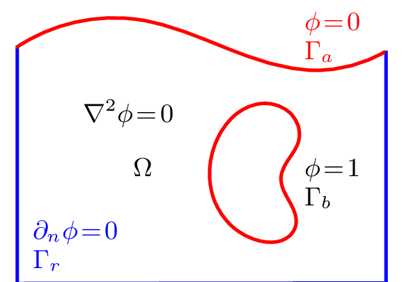
Fig. 5 · Bubble \(\phi=1\), free surface \(\phi=0\), walls \(\partial_n\phi=0\) 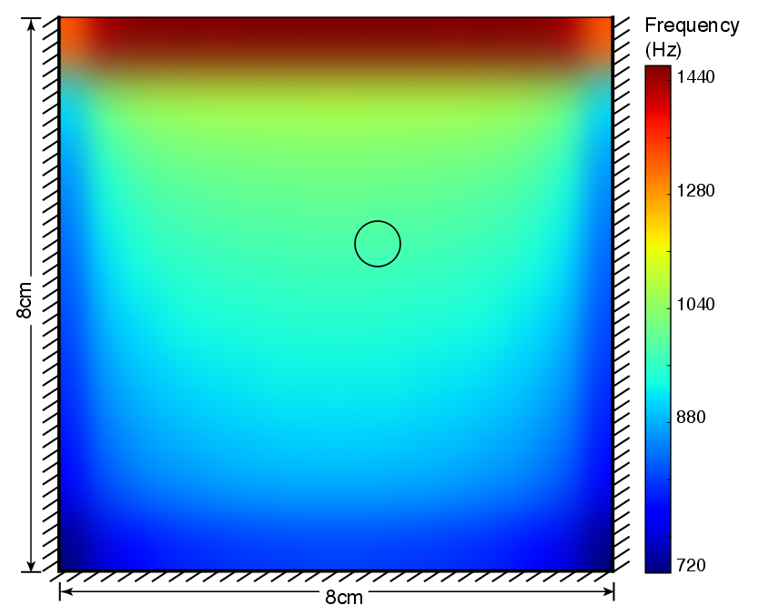
Fig. 4 · 3 mm bubble, 8 cm tank: 700+ Hz shift with position
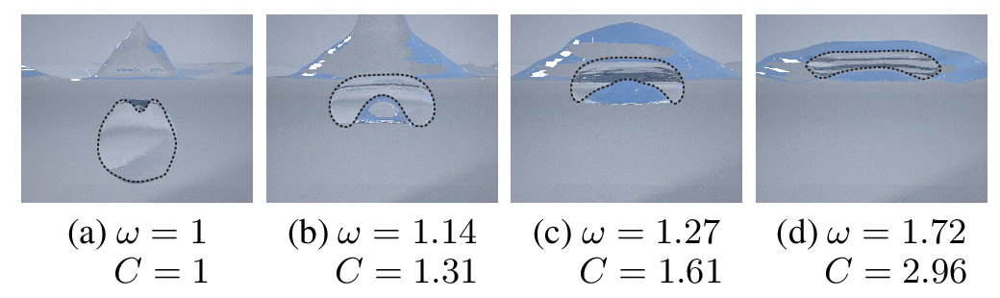
Fig. 6 · Bubble flattens under the surface: \(C\) and \(\omega\) rise 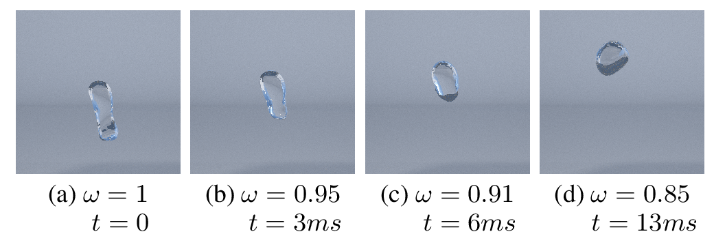
Fig. 7 · Shape alone shifts pitch by semitones in ~10 ms
Green's first identity turns that volume integral into a surface integral over the boundary of the liquid. Set up the boundary conditions: free surface φ = 0 (pressure release), rigid walls ∂ₙφ = 0. Both terms vanish, so only the bubble surface contributes, and φ is constant on it.
That's exactly an electrostatics problem: the bubble is a conductor held at unit potential, the free surface is grounded, walls are insulators. The mass is ρ over 4π times the capacitance. For a sphere in open water C = R and you get Minnaert back.
Now the frequency depends on where the bubble is: in this 8 cm tank a 3 mm bubble shifts by over 700 Hz, dropping near walls and rising sharply near the surface. A bubble flattening under the surface is a thinning plate capacitor, hence the rising chirp. And shape changes alone move pitch by semitones in milliseconds. One shared factorization per time step amortizes the solves over all bubbles: 3–12× faster.
2016: validation and results
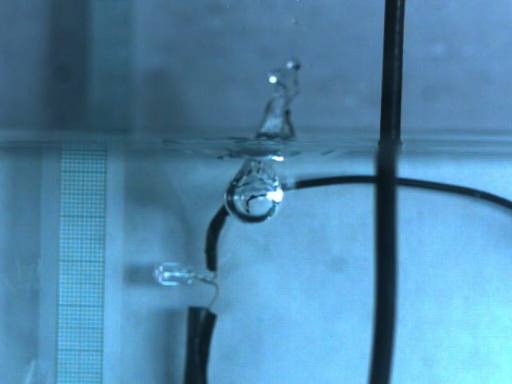
Bubbles released from a tube, recorded in a tank
Single bubble ▶ recorded ▶ simulated
Underwater release ▶ recorded ▶ simulated
Pouring faucet — resonance changes as the glass fills
Cost: tens of thousands of core-hours per example (680 cores). Limits: independent bubbles, idealized forcing, frequency-domain radiation.
We validated against single bubbles in a tank. [Play recorded/simulated pairs.] Then full scenes — a glass filling; listen to the resonance of the glass change.
But: tens of thousands of core-hours per example. And three big approximations I'd flagged as future work: bubbles act independently, forcing is idealized, and per-bubble frequency-domain radiation misses time-varying effects of a moving surface.
Toward Wave-based Sound Synthesis for Computer Animation
Wang, Qu, Langlois & James · SIGGRAPH 2018
Frequency-domain vs. time-domain radiation for bubble-based water
Solve the wave equation in time (FDTD) around the sources
Sharp interfaces that move and deform every step
Acoustic shaders : one solver for water, rigid bodies, shells, charactersNear-field scattering & diffraction for free
Time-parallel synthesis on the cloud
55 hours
2016 pouring faucet, single machine
2018: rather than solve a Helmholtz problem per bubble per frequency, simulate the actual pressure waves in time around the sound source. The water surface moves and vibrates, and the solver sees that directly. Acoustic shaders let one solver handle water, rigid objects, thin shells, even characters. More physically faithful — and much more expensive: the 2016 faucet took about 55 hours on one machine.
Bubbles don't sing aloneImproved Water Sound Synthesis using Coupled Bubbles
Xue, Aronson, Wang, Langlois & James · SIGGRAPH 2023
$$\mathbf M(t)\,\ddot{\mathbf v} + \mathbf C\,\dot{\mathbf v} + \mathbf K\,\mathbf v = \mathbf f(t)$$
$$M_{ii} = \frac{\rho}{4\pi R_i},\qquad M_{ij} = \frac{\rho}{4\pi d_{ij}}$$
Every bubble pushes on every other: dense, time-varying mass matrix
Clouds develop collective low-frequency modes
Matches the modes measured for a 53-bubble cloud [Leroy et al. 2005]
2023, with Kangrui Xue: the biggest approximation in 2016 was treating bubbles independently. But every bubble's volume change pushes water on all its neighbours — a 1/distance coupling — so the mass matrix is dense. [Demo: start with 2 bubbles; then slide up to 40–60 bubbles in a tight cloud.] Watch the lowest mode drop about an octave below any individual bubble. That's the roar of the surf.
Practical issues: the matrix changes every step and has singularities as bubbles touch — the paper regularizes those and makes time stepping cheap.
Coupling restores the low end
Filling a glass: uncoupled vs. coupled
Wave crash: uncoupled vs. coupled
Hundreds of thousands of bubbles · works with FLIP animations too
Results: listen for the fuller low-frequency content once coupling is on. It also scales to hundreds of thousands of bubbles, including procedurally generated bubbles in ordinary single-phase FLIP animations — you don't need the expensive two-phase sim.
WaveBlender: Practical Sound-Source Animation in Blended Domains
Xue, Wang, Langlois & James · SIGGRAPH Asia 2024
Blending two discretizations in time
Moving interfaces on a coarse grid: blend between consecutive discretizations with one parameter β per cell
Minimal change to FDTD; GPU-friendly by design
The 2016 pouring faucet, re-synthesized
55 h → 2.5 min
same scene, ~1000× faster
2024: WaveBlender. Wave solvers struggle when interfaces move continuously across a discrete grid — you get artifacts or need very fine grids. The idea: blend between two consecutive discretizations over time with a single β per cell. Tiny change to the update equations, runs great on GPUs.
Same 2016 faucet scene: 55 hours → about 2.5 minutes. About 9× from real time for that example. That's the arc: from physically right to physically right and practical.
Bubbles at workEngineering with bubble acoustics
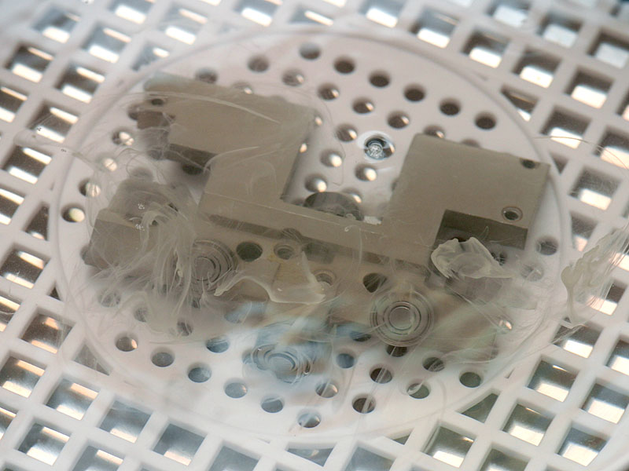
Thomas Kraft · CC BY-SA 2.5 · Wikimedia Commons
Ultrasonic cleaning
Transducers drive the bath at ~20–40 kHz. Cavitation bubbles grow over many cycles, then collapse violently; the micro-jets and shock waves scrub dirt off surfaces and out of crevices.
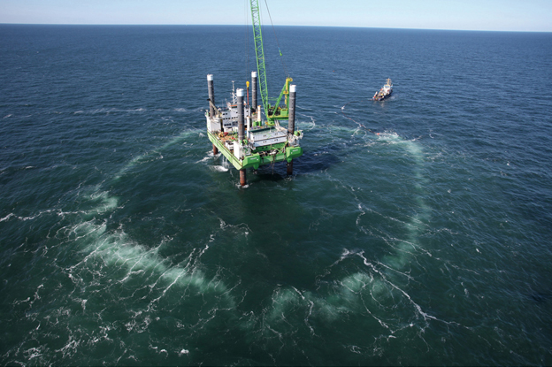
Hero Lang, Hydrotechnik Lübeck · CC BY-SA 3.0 DE · Wikimedia Commons
Bubble curtains
A perforated hose on the seabed rings an offshore wind-turbine pile with rising air. The bubbly wall scatters and absorbs pile-driving noise, cutting it by ~10–15 dB to protect porpoises and seals [Bellmann et al.].
Two places engineers put bubble acoustics to work. Left: an ultrasonic cleaner. The bath is driven at tens of kilohertz, which grows tiny cavitation bubbles that then collapse violently. The jets and shock waves from those collapses are what scrub the part. In the photo you can see the dirt streaming off.
Right: a big bubble curtain at the Borkum West II offshore wind farm in the North Sea. Hammering a turbine pile into the seabed is extremely loud underwater. A hose laid in a ring around the pile releases air, and the bubbly water acts as an acoustic barrier — the same physics as Wood's equation and resonant scattering from earlier. A single curtain cuts the noise by about 10–15 dB, and it's now standard practice in German waters.
Nature got there firstHumpback whale bubble-net feeding
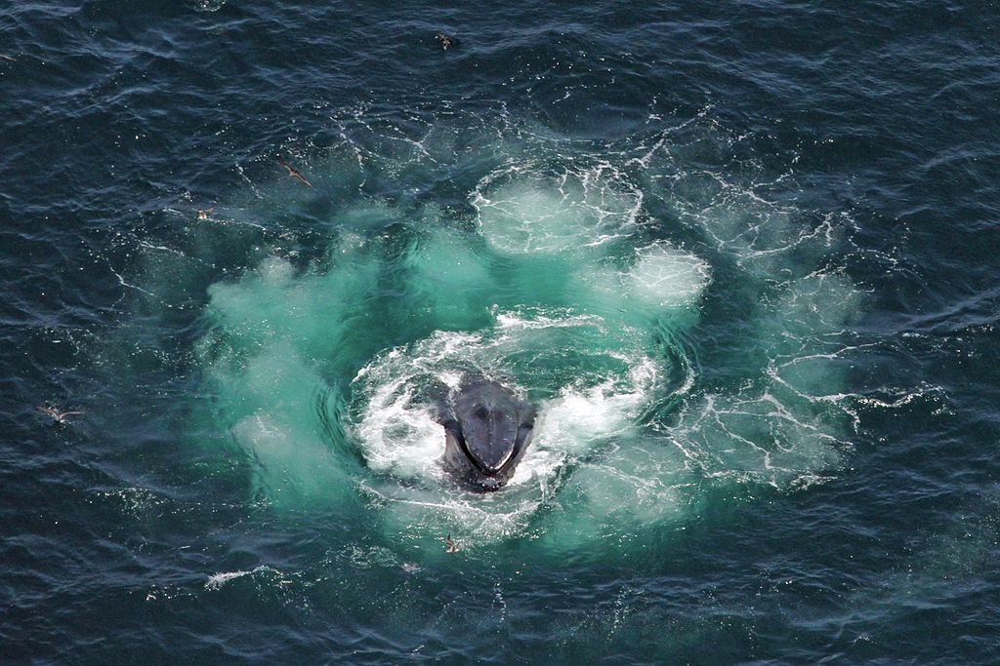
Humpback whales surfacing through a bubble net (image via Wikipedia, “Humpback whale”)
Whales spiral upward, exhaling a curtain of bubbles around a school of fish
Fish won't cross the wall — bubbly water is visually and acoustically opaque
Hypothesis: the net is an acoustic trap — calls inside a ring of bubbly water form a “wall of sound” [Leighton et al. 2004, 2007]
Thank you!
Changxi Zheng · Doug L. James · Jui-Hsien Wang · Ante Qu · Kangrui Xue · Ryan M. Aronson
To close: humpback whales have been using bubble acoustics for a long time. They spiral up beneath a school of fish, blowing a ring of bubbles. Fish won't cross the curtain. Tim Leighton and colleagues proposed that the net also works acoustically: bubbly water slows and reflects sound so strongly that the whales' calls get trapped inside the ring — a wall of sound. Whether or not that's exactly right, it's a lovely reminder that the statistics of bubbles and the sound of individual bubbles both matter. Thank you.